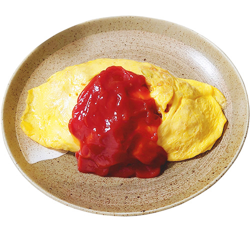
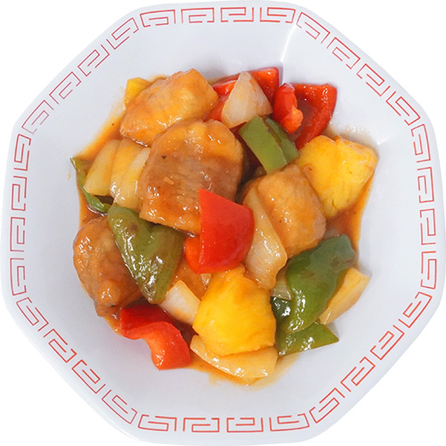
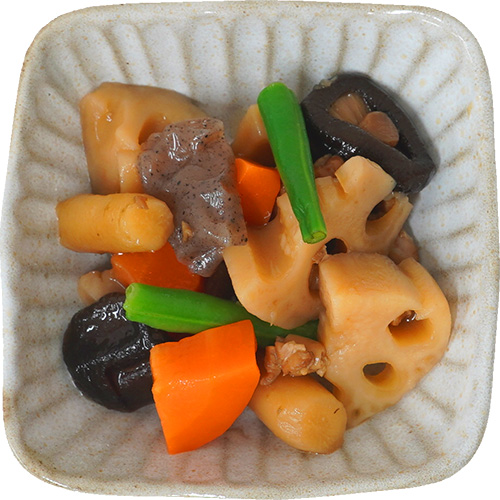
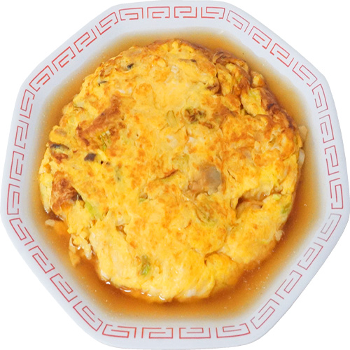
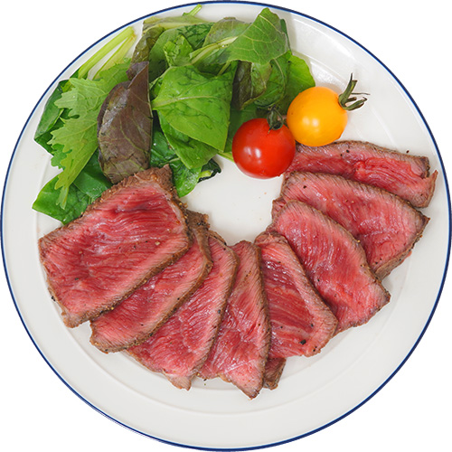

レシピ一覧
初心者向け料理
オムライス

調理時間20分
卵をふんだんに使うことがとろとろの決め手になります。
- ご飯（お茶碗1杯分 約200g）
- 卵（2個）
- 鶏もも肉（50g 1cm角に切る）
- 玉ねぎ（1/4個 みじん切り）
［材料］
- ライス
- ・ケチャップ（大さじ2〜3）
- ・塩、こしょう（少々）
- ・サラダ油（またはバター：適量）
- 卵液
- ・卵:2〜3個
- ・牛乳または水（大さじ1（ふんわりさせるため）
- ・バターまたは油（大さじ1）
［調味料］
【作り方の手順】
- 1.具材を炒める:玉ねぎをみじん切り、鶏肉を1cm角に切ります。フライパンにバターを熱し、鶏肉と玉ねぎを炒めます。
- 2.ライスを作る:具材に火が通ったらご飯を加え、ケチャップ、塩胡椒で味を整えてチキンライスを完成させ、お皿に盛っておきます。
- 3.卵を焼く:ボウルで卵、牛乳、塩胡椒をよく混ぜます。強めの中火で熱したフライパンにバターを溶かし、一気に卵液を入れます。
＊包む場合: 表面が半熟のうちに火を弱め、チキンライスを中央に乗せて左右から折りたたみます。
＊ふわとろ（のせるだけ）の場合: 箸で素早くかき混ぜ、半熟の状態で火を止め、チキンライスの上にスライドさせるように乗せます。
家庭料理
酢豚

調理時間40分
豚肉に粉をまぶしてカリっと香ばしく揚げてから
甘酢あんをからめます。
- 肉(豚ロースまたは肩ロースかたまり肉 250g)
(下味:醤油・酒 各小さじ1、片栗粉 適量 [1.5]) - 玉ねぎ（1/2個）
- ピーマン（2個）
- にんじん（1/3本）
［材料］
- 砂糖（大さじ3）
- 酢（大さじ3）
- 醤油（大さじ2）
- 水（大さじ4）
- 片栗粉（小さじ1〜2）
［調味料］
- 1.野菜は乱切りにし、にんじんは耐熱容器で2分ほど加熱して柔らかくしておくと時短になります。
- 2.揚げる:170〜180℃の油で豚肉を約2分、カリッとするまで揚げます。
続けて野菜もさっと素揚げ（30秒〜1分）すると、彩り良くシャキッと仕上がります。 - 3.時短テク:揚げ物が面倒な場合は、多めの油を引いたフライパンで「揚げ焼き」にしても美味しく作れます。
- 4.仕上げ:フライパンで合わせ調味料を熱し、ふつふつと沸いてとろみがついてきたら、揚げた肉と野菜を一気に入れます。
- 5.完成:手早くタレを絡めたら完成です。最後にごま油を少量回し入れると、プロのような艶と香りが生まれます。
【作り方の手順】
筑前煮

調理時間50分
照りつや美しい、定番の筑前煮を基礎調味料を使っておいしく。
- 鶏もも肉（1枚 250g前後）
- 根菜・その他
- ・ごぼう、人参、れんこん、里芋、こんにゃく、干し椎茸
- 彩り
- ・絹さや、またはインゲン（別茹でして最後に添える）
［材料］
- だし汁 200〜300ml
（干し椎茸の戻し汁を加えると旨みが増します） - 醤油 (大さじ2)
- みりん (大さじ2)
- 砂糖 (大さじ1)（コクを出すためにお好みで）
- 酒 (大さじ2)
［調味料］
- 1:下準備:鶏肉を一口大に切ります。こんにゃくは手で一口大にちぎります。
- 2.炒める:フライパンに油を引き、鶏肉を色が変わるまで炒めます。
次に冷凍野菜とこんにゃくを加え、全体に油が回るまで強火でさっと炒めます。 - 3.煮る:すべての調味料を加え、煮立ったら落とし蓋（またはアルミホイル）をして中火で15〜20分ほど煮ます。
- 4.仕上げ:煮汁が少なくなってきたら蓋を取り、強火でフライパンをゆすりながら煮汁を全体に絡めて完成です。
【作り方の手順】
時短レシピ
かに玉あんかけ

調理時間15分
シンプルな材料でさっと簡単に作れるので、
忙しいときにもおすすめです。
- 卵（3個）
- カニカマ（5本/約30〜60g）
- 長ねぎ（5cm程度/みじん切り）
［材料］
- 卵液
- 塩こしょう（少々）
- ごま油（小さじ1）
- 甘酢あん
- 水（120ml）
- 醤油・酢・砂糖（各 大さじ1）
- 片栗粉（小さじ2）
［調味料］
- 1.下準備:ボウルに卵を割り入れ、ほぐしたカニカマ、長ねぎ、調味料を加えてよく混ぜ合わせます。
- 2.あんを作る:小鍋にあんの材料をすべて入れ、火にかける前によく混ぜます。
中火で加熱し、絶えずかき混ぜながらとろみが付くまで煮立てます。 - 3.卵を焼く:フライパンに多めの油（大さじ2程度）を強火でしっかり熱し、卵液を一気に流し入れます。
- 4.箸で大きく円を描くように手早くかき混ぜ、半熟状になったら形を整えて器に盛ります。上から温かいあんをたっぷりかけて完成です。
【作り方の手順】
おもてなし料理
ローストビーフ

調理時間1.5時間
じっくり湯せんし、仕上げにフライパンで焼き色をつけるだけで完成する人気の肉メニュー。
- 牛ももブロック肉（300〜400g）
［材料］
- 塩・こしょう（適量 多めがおすすめ）
- にんにく（すりおろし:1片分）
- オリーブオイル（大さじ1）
［調味料］
- 1.下準備:常温に戻した肉に、塩・こしょう、にんにくをしっかりすり込み、15分ほど置きます。
- 2.焼き色をつける:フライパンにオイルを熱し、強火で肉の全面（6面）を1〜2分ずつ焼き、香ばしい焼き色をつけます。
- 3.密封する:肉を二重にしたラップできっちり包み、さらにアイラップなどの耐熱性の密閉袋に入れ、空気を抜いて閉じます。
- 4.湯煎（余熱調理）:鍋に沸騰したたっぷりのお湯に袋を沈め、火を止めて蓋をし、そのまま20〜30分放置します。
- 5.休ませる:お湯から取り出し、袋のままさらに20分以上放置して完成です。